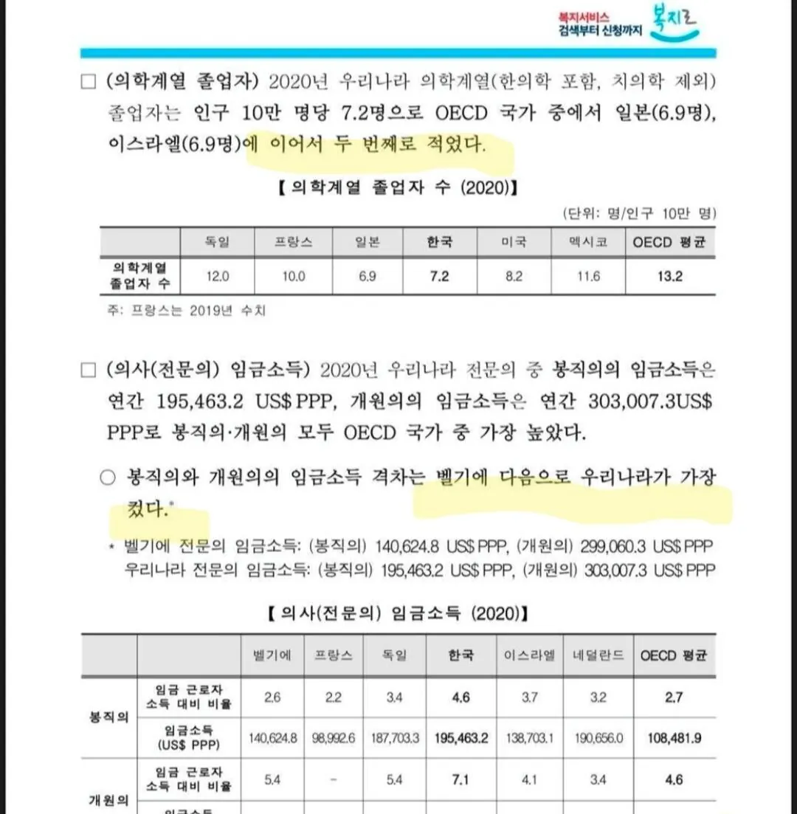
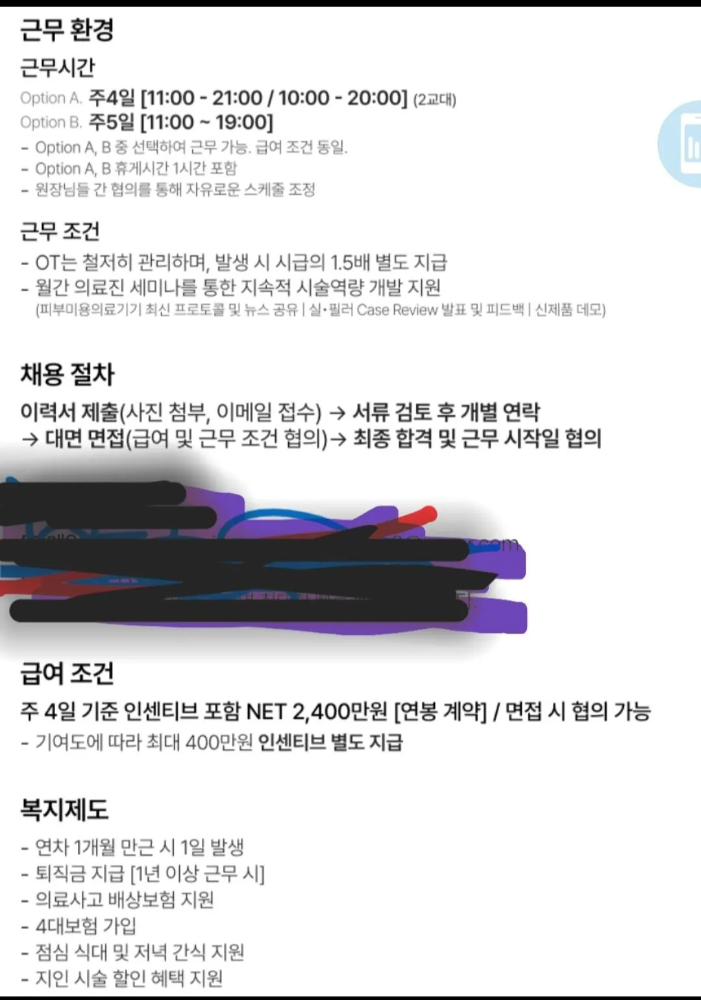

월 세후 2400 ㄷㄷ
인구당 의사 숫자
세계 꼴찌 찍은 덕에
구매력 기준 의사 연봉
세계 1위 찍음 ㄷㄷㄷㄷ


월 세후 2400 ㄷㄷ
인구당 의사 숫자
세계 꼴찌 찍은 덕에
구매력 기준 의사 연봉
세계 1위 찍음 ㄷㄷㄷㄷ
계왕권마냥 의대 증원 10배!!!
의사 늘리고 미용시장 개방해야함
한의사 제외한건가 한의학은 믿을 수 없어서
한의사포함
여기 저능아들 ㅈㄴ많네 ㅋㅋ 진짜줄알고 월급 줄여라 ㅇㅈㄹ하고있네 딱봐도 학창시절 공부꼬라지도 얼마나못했을지 보이네
양측 말 들어보면 다들 일리는 있는데 그래도 좀 늘리는게 맞는 것 같어... 한국인들 똑똑해서 그렇게 질의 하락도 없을듯
아니면 간호사의 역할, 권한 확대 해주던지 이건 왜 반대하는지 모르겠고
처우개선없이 확대만 하면 간호사가 그쪽으로 다 흘러가서 종병에 있을 간호사가 부족해짐

세전 2,400은 연봉 5억 가까이 되는구만 미쳤다 진짜
의대도 다른 단과대들처럼 과 정해서 입학하면
안되는건가 생각해봅니다
그럴라가있ㄴㅎ ㅋㅋㅋ
26살 의사도 있어?
주작. 절대 저렇게 안 됨.
저거랑 다르지만 피부과 워라벨 꿀빨면서 월급 받으면 1000만원도 훨씬 안 됨
전문의가 조스로 보이냐
GP가 저렇게 받으면 누가 과 전문의로 봉직하냐
gp 요즘 시세 8월 졸업생들 나와서 저거의 반도 안 되고 애초에 저것도 이 시장에서 나온 가장~ 큰 최대의 최대값을 부르는 이상한 특이점, 존나 스캠일 가능성이 매우 높은 병원 자료 하나 구해온 거임. 그리고 어차피 3월에 졸업생들 3000명 넘게 쏟아지면 더 떨어질거임. 그리고 조만간 건보 고갈 예정이라 인두제로 갈 것이고 그럼 지금처럼 돈 못 벌고 딱 교사나 간호사만큼 벌게 될 거임 길어야 5년 남았나? 어차피 2000명 증원된 25학번 쏟아지고 그 후로도 몇 백명 더 증원됐고 국립의대도 새로 새웠고 온지랄 다하면서 의사 존나 패는 거 이미 착실히 실현 중임. 하지만 이런 팩트는 지루하고 현학적이며 아무도 관심없고 그저 2400만원 무지성 의사 증원해~~~~가 현실임.. 아니 증원 이미 존나 했다니까? 그건 또 관심 좆도 없음
와 다행이다
반도 크다 세후 천이백이 ㅈ으로 보이냐
세전 천정도가 적당함
1200이어도 세전으로 2.2억임, 지식이라곤 1도없는 벌레GP가 매크로로 처방전 복붙하면 2.2억 ㅋㅋ
Gp가 일반의라고는해도 의학 6년공부한 의사가 ㅈ으로 보이나 일반대학으로 생각하면 석사 수준이고
치과의사 한의사보다는 의학관련 지식이 몇배는 많다고 생각하는게 일반적인데..
혹시 한무당?
너무 잘 됬네요!
제발 나 시켜줘라 월2400 어디냐 저거의 반도 못 받는데
지방 의료원만가도 월급 2500그냥찍는데 근데워라벨은없음...
오 근데 근무시간 11~19면 야근없다는 조건 하에 짱좋다.. 아침에 운동하고 쉬다 출근가능하네
나 전문의인데 부럽다~
많이주는데들은 뭔가 이유가 있긴함 ㅎ
한국 의사 진짜 개꿀아니냐? 이공계에서 아둥바둥 미국유학후 정착해서 세전 8억정도 버는데, 의전간애들 비교해보면 삶의질은 내가 그냥 개쳐발리는듯
미국에서 8억이면 세후는 몇억임?
QOL 은 다들 만족하는게 대부분인듯ㅎㅎㅎ
대부분 잘살고있어서 안부물을일이 잘 없음 ㅋㅋㅋ
401k로 많이 까고 연봉 절반이 주식이라 세후계산이 빡쌤, base만 따지면 2주급으로 8천불정도 들어옴. 잘 버티면 상방은 큰데, 한국같이 좋은나라에서 안정적인 삶 진짜 부럽다
401k 최대 월 2천불 아님? 주거비가 관건일거같은데
8억벌면서 남의떡이커보이노 ㅋㅋㅋ
하긴 다 각자의 위치에서 애로사항이 잇겠지
막상 우리쪽은 usmle따려고 난리인데 ㅎㅎ
힘내셈
의주빈들 이런글 특 무조건 주작이라고 댓글 박음 ㅋㅋ 내 여친이 GP로 세후2천 받아오는데
의대 갓 졸업한 gp가 세후 2400 벌려면... 낮엔 미용 밤엔 응급실 투잡 뛰면서 수명 갈아넣어야 가능할듯...
잉 요즘 미용알바 일급 백만원 준다던데 소개해줘?
응 소개해줘
갑자기 의문의 실드들이 많네 ㅋㅋㅋ
커뮤에 상주하는 의료인들 많더라
ㅁㅊ
세후2400이면 일당이 200인데 주사바늘로 재봉틀처럼 찍어야할듯
저거 신고소득 기준이라 뒤로 받는건 하나도 집계안됨 개원의는 세금다떼고 3~4장 못가져가면 불쌍하게봄
의사들 진짜 커뮤 돌면서 본인들 급여 내려치는건 한결같네 요즘같이 한다리 건너면 의사들 있는 시대에 참..
근데 26살 의사가 있나?? 학교졸업 , 인턴 이거 다 해도 30대 가야할텐데
의대가 아니라 의학계열이라고 적은 이유가 있다
의사가 돈 많이 받는건 찬성인데 수는 좀 늘어나야지
의대 서열이 있어서 지잡대는 끼지도 못함
그들만의 리그임.
제모레이저랑 보톡스는 간호사한테 풀자
의사가 국가위에 있다는걸 보여줬지 ㅋㅋㅋㅋ
gp한테 돈을 더 주지 하다보면 수련시기 놓쳐서 그거만 해야하자너 미용이 언제까지 갈지도 모르고
월 2400이면 펑펑 써도 돈 남겠다
보통 교수로 정착하면 세전 300k도 안주는 경우 허다한데 2배 시작 이란 말부터 틀림. 한국서 세후로만 계산하다가 미국도 세후인줄 착각하셨나? 다들 한국에서 잘벌다가 물가는 5배가 비싸지는데 연봉이 겨우 2배? 해서 아무도 안오는 판에, 애들 교육때문에 정착하는 케이스는 많이봤다. 본인 미국살고있음